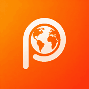
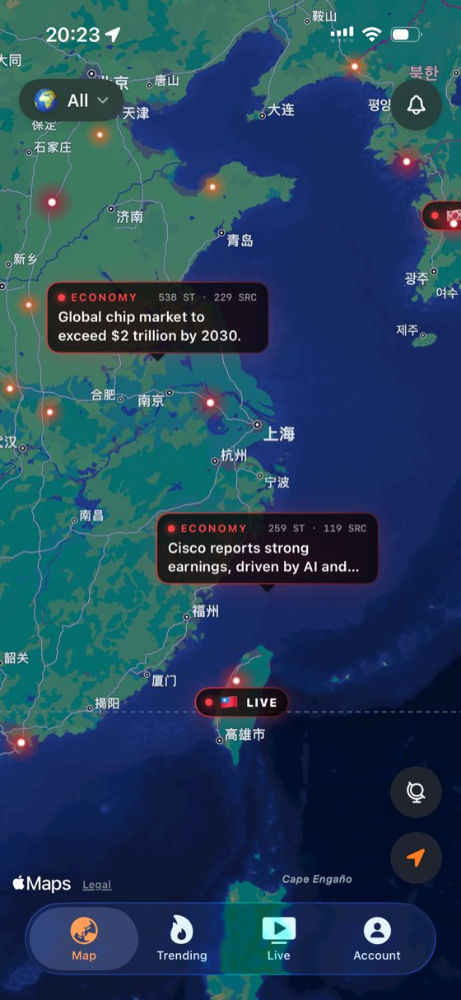
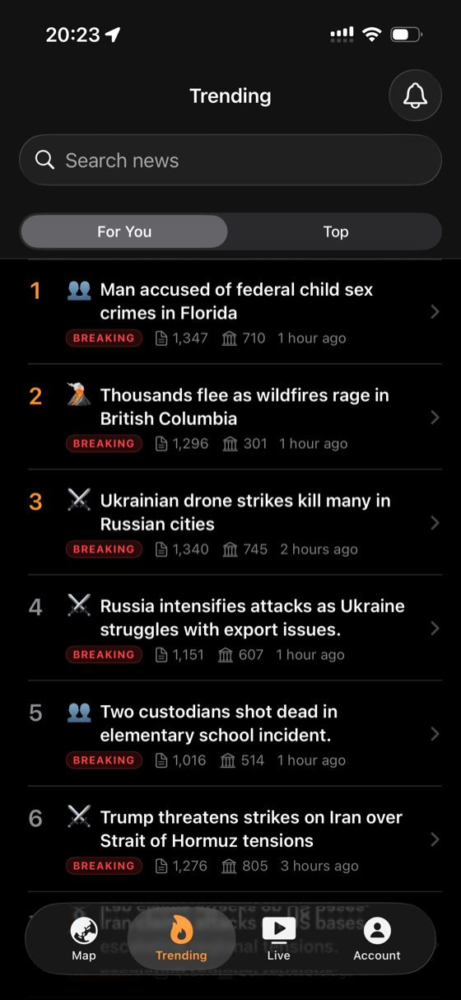
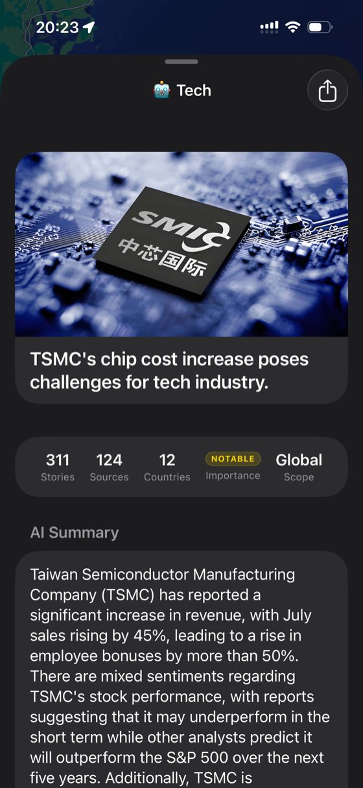
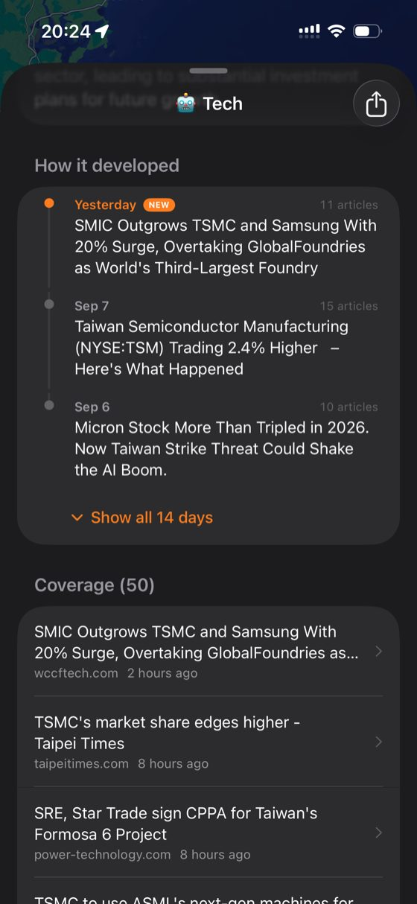

iOS · SwiftUI · FastAPI · pgvector

pulza
A news app that shows you the shape of a story instead of a feed. Reports from thousands of outlets are clustered into single events, plotted on a live world map, and summarised so you can see what happened, how big it is, and where — at a glance.




Overview
Most news apps hand you an endless list of articles and leave you to work out which ones are the same story. pulza inverts that. The unit you read is the event, not the article — reports from thousands of outlets are clustered server-side into a single event, and everything the app shows you hangs off that: how many outlets picked it up, how many countries, how it developed day by day, and where in the world it is happening.
The signature view is a dark MapKit world map where events surface as hotspots that glow by severity. Tapping one opens the event; live broadcast channels appear as their own markers. It turns "what is happening right now" into something you scan spatially rather than scroll through.
pulza is a shipped product, not a prototype — published on the App Store, localised into five languages, with Home and Lock Screen widgets, breaking-news alerts, and a daily briefing delivered at a time the reader chooses.
All of it runs on a single Oracle Cloud Always Free ARM VM. One Ubuntu box holds the FastAPI service, nginx splitting production from staging by domain, and a self-hosted PostgreSQL 16 bound to localhost. The API carries six dependencies and no ORM — every query is hand-written SQL — because on a free-tier machine the cost of a framework is measured in the requests it can no longer serve.
Anatomy of an event
311
Stories
124
Sources
12
Countries
Notable
Importance
Global
Scope
Every event page opens with these five numbers, taken from a real event in the app. They answer the question a headline never does — not just what happened, but how widely it is being reported and how far it reaches.
How two reports become one event
Every incoming article is embedded with text-embedding-3-small and matched against existing events through an HNSW cosine index over a 512-dimension events.embedding column. A match only merges if it clears all three gates — semantic similarity alone is not enough, because two unrelated stories can describe the same kind of thing on opposite sides of the world.
Semantic
cosine ≥ 0.55
The article's embedding has to sit close enough to the event's centroid in meaning, not just share keywords.
Geographic
distance ≤ 1500 km
Two similarly-worded reports about different regions stay separate events, which is what keeps the map honest.
Temporal
last_seen ≤ 72 h
A dormant event stops absorbing new coverage, so a fresh development starts its own story instead of inflating an old one.
A second pass then compares the new events created within the same batch against each other — without it, coverage of one story arriving in the same minute would fragment into several near-identical events. If the embedder is unavailable the pipeline degrades to a deterministic grid rule (same topic, same H3 resolution-4 cell, same day) rather than failing: ingestion never stops, it just gets coarser.
Key Features
Live World News Map
Events are geolocated onto a dark MapKit globe, with hotspots that glow brighter as severity rises. Cards surface the category, story count and source count inline, so the map is readable without tapping anything.
One Event, Every Source
Thousands of individual reports collapse into a single event with a full coverage list — every outlet that carried it, when, and from which country. Duplicate headlines stop being noise and start being a measurement of how big a story is.
AI Summary & Development Timeline
Each event carries a gpt-4o-mini summary reconciling what the sources agree and disagree on, plus a "how it developed" timeline tracking the story day by day — up to two weeks back — with the article count behind each step. Summaries are generated lazily and cached per language: nothing is spent on an event nobody opens.
Trending, Ranked Two Ways
A "Top" board ranked by how hard a story is breaking globally, and a "For You" board matched against a taste_embedding held on the reader's profile and compared to events through the same vector index. Both show the raw evidence — article count, source count, and how long ago it broke.
Live Channels Worldwide
Channels from dozens of countries, with live chat and a viewer count, pinned to the map where they broadcast from. The schema supports HLS, YouTube and external sources, but production ships external only — App Review guideline 5.2.2 means every channel opens the broadcaster's own page. The in-app player is written and dormant, ready for the day the licensing exists.
Alerts That Respect Attention
Breaking alerts fire the moment something major happens anywhere in the world, but followed stories only notify when the story actually develops — not every five minutes. A single daily briefing arrives at a time the reader picks.
Five Languages, and Widgets
Headlines and summaries are served in English, 中文, 日本語, 한국어 and Español. Home and Lock Screen widgets carry top stories, a live map, and the stories the reader follows.